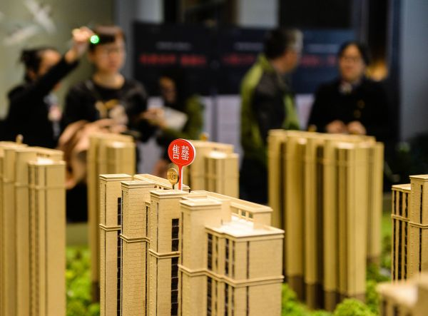

为何中国七成年轻人有房？港媒：中小城市房价仍能承受
01:50:00 来源：参考消息网 责任编辑：张程核心提示：分析人士认为，中国年轻人有房率高的原因也许源于文化价值观、年轻人收入相对较高，以及独生子女政策得以让家长为孩子倾注资金购房。
参考消息网4月12日报道 港媒称，内地年轻人与香港年轻人难于购房的形势大有不同。
据香港《南华早报》网站4月11日报道，一份调查表明，中国年轻人的购房率是参与调查的几个国家中最高的。
汇丰银行的这份报告显示，中国内地70%受访的千禧一代拥有自己的住宅，在美国和英国，这一比例分别是35%和31%。约有9000名来自9个国家19岁到36岁的人士参与了调查。
分析人士认为，中国年轻人有房率高的原因也许源于文化价值观、年轻人收入相对较高以及独生子女政策得以让家长为孩子倾注资金购房。
房产咨询公司高力国际的副总经理文森特·张（音）认为，尽管北京和上海的房价猛涨，但许多小城市的房价仍是年轻人能够承受的。
中国一些年轻人可以在二三线城市赚取较高的薪水，继而在家乡小城市购置较为便宜的房子。
7岁的沃拉尔·叶（音）和妻子在广东有一处房产，是父母为他们购置的。这对夫妻现在计划再购置一套公寓。他认为，“房产是固定资产，比股票等投资更切实。 。其他没有很多可以选择的产业或者有信心的产业。”
中国内地的家长也常常为子女购置住宅提供首付。汇丰银行的调查发现，40%有房的年轻人在买房时寻求帮助。
内地这种情况和香港寻求买房的年轻人形成了对比。去年香港青年协会发布的一份调查表明，许多年轻人预计需工作 25年才能买得起一处房产。（编译/胡溦）
 点击图片进入下一页
资料图片：市民在一处楼盘看房。新华社记者 季春鹏 摄